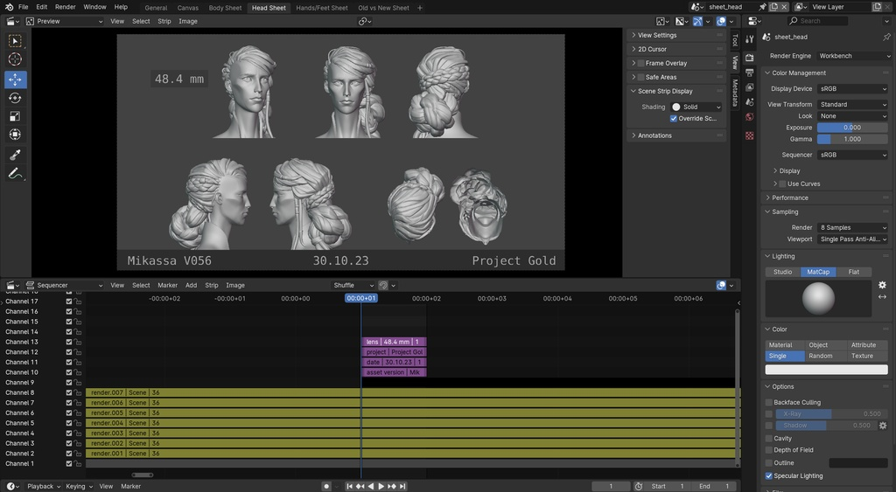

O curso Avançado em Modelação, Animação 3D e Rigging para Videojogos é especializado na criação integral de assets 3DAssets 3DElementos tridimensionais utilizados num videojogo, como personagens, cenários, objetos ou efeitos visuais prontos para integração num motor de jogo. para videojogos. Destina-se a quem pretende adquirir competências técnicas e artísticas em modelação 3D, animação 3D e rigging para videojogos, bem como para outros ambientes interativosAmbientes InterativosAplicações digitais onde o utilizador pode interagir com o conteúdo, como videojogos, experiências 3D ou aplicações em tempo real. e outros media, como séries ou cinema de animação 3D.
Os videojogos e a arte digital são uma das principais formas de entretenimento no mercado atual. A indústria dos videojogos encontra-se num período de crescimento exponencial, gerando milhares de milhões de euros anualmente e ultrapassando, em valor, a indústria da música e do cinema combinadas.
Esta formação engloba desenho, concept artConcept ArtCriação visual que define o estilo, a aparência e a atmosfera de personagens, cenários ou objetos antes da sua produção final., prototipagem, modelação hard surfaceModelação Hard SurfaceTipo de modelação 3D utilizada para criar objetos rígidos e mecânicos, como veículos, armas, robôs ou elementos arquitetónicos., modelação orgânicaModelação OrgânicaTipo de modelação 3D utilizada para criar formas naturais, como personagens, criaturas ou elementos biológicos., texturização, shadersShadersProgramas que definem como a superfície de um objeto reage à luz, cor e outros efeitos visuais num ambiente 3D., riggingRiggingProcesso de criação de uma estrutura interna de ossos e controlos que permite mover e animar personagens ou objetos 3D., skinningSkinningProcesso que liga a malha 3D ao rig, permitindo que o modelo se mova corretamente durante a animação., animação 2D, princípios de animação, storyboard e animação 3D. Ao longo do curso poderá criar um cenário completo e uma personagem do início ao fim, dando-lhes vida com animações apelativas.
Um asset de um videojogo pode ser um cenário ou uma personagem animada. Trata-se da matéria-prima visual de um videojogo, exigindo estudo prévio, conceito e idealização. Antes de criar um cenário, terá de realizar o seu estudo através de concept art e de outros tipos de prototipagem, fundamentais no processo de criação de assets para videojogos.

Para uma personagem se poder mover, necessita de uma estrutura interna que lhe permita ter o controlo necessário para criar animações apelativas. Após aprender as técnicas de rigging e skinning, poderá mover objetos, animar personagens e otimizar a sua apresentação em videojogos e outros ambientes interativos.
O curso foca-se na criação de assets animados com BlenderBlenderSoftware gratuito e open-source utilizado para modelação 3D, animação 3D, rigging, simulação, texturização e renderização, amplamente utilizado na indústria dos videojogos e da animação digital., um dos softwares mais populares, completos e cada vez mais utilizados na indústria dos videojogos e da animação digital.

Irá aprender a desenhar digitalmente, a criar protótipos, a estudar e observar imagens de referência, a conceptualizar as suas ideias e a apresentar o seu trabalho de forma clara, estruturada e profissional.
Esta formação engloba o trabalho de um 3D Artist3D ArtistProfissional responsável pela criação de modelos tridimensionais, personagens, cenários e objetos para videojogos, animação ou outras aplicações digitais. e de um Technical ArtistTechnical ArtistProfissional que faz a ligação entre arte e programação, garantindo que os assets funcionam corretamente dentro do motor de jogo. na indústria de videojogos e será uma ferramenta essencial para entrar, evoluir e permanecer nesta área.
Na Master.D, além de manuais e recursos didáticos atualizados, terá acesso a um conjunto de ferramentas que enriquecem a sua aprendizagem, como webinars, masterclasses e workshops, permitindo aproximar-se da realidade da indústria e desenvolver competências práticas valorizadas no mercado.